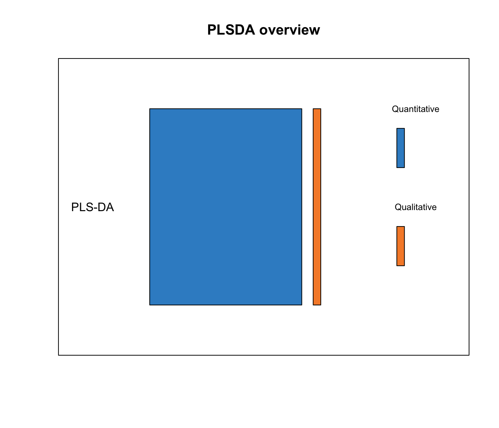
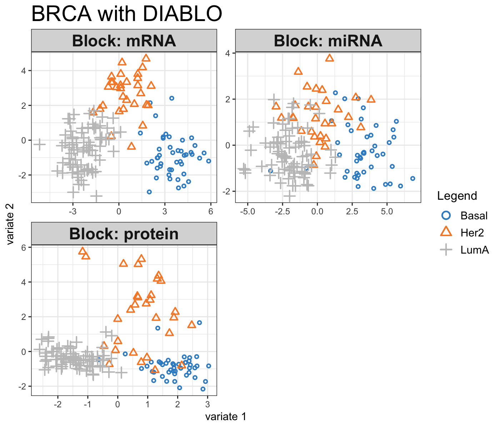
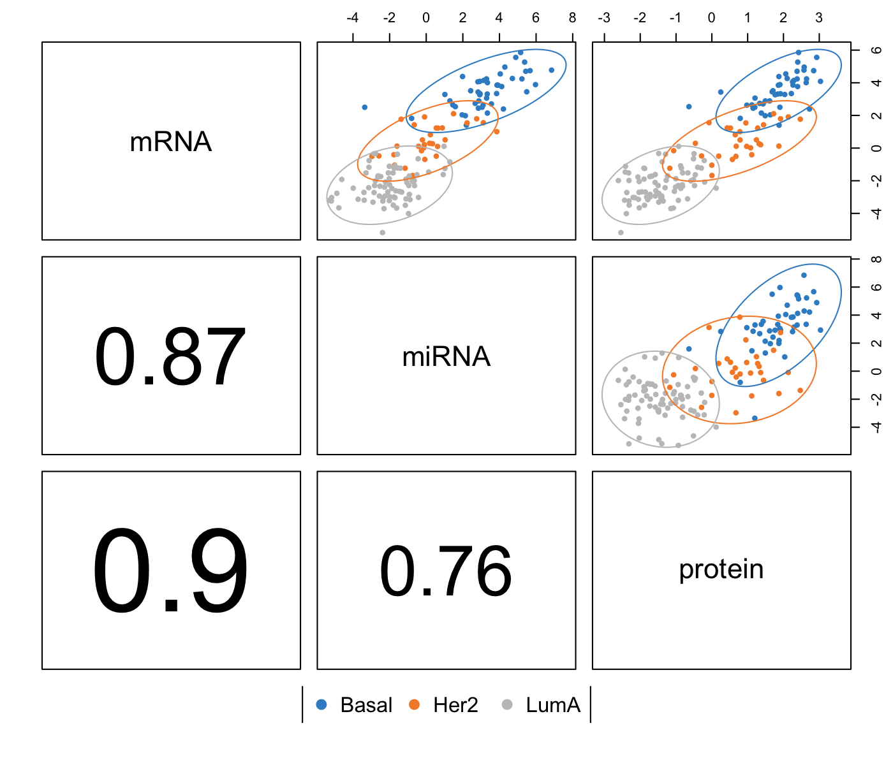
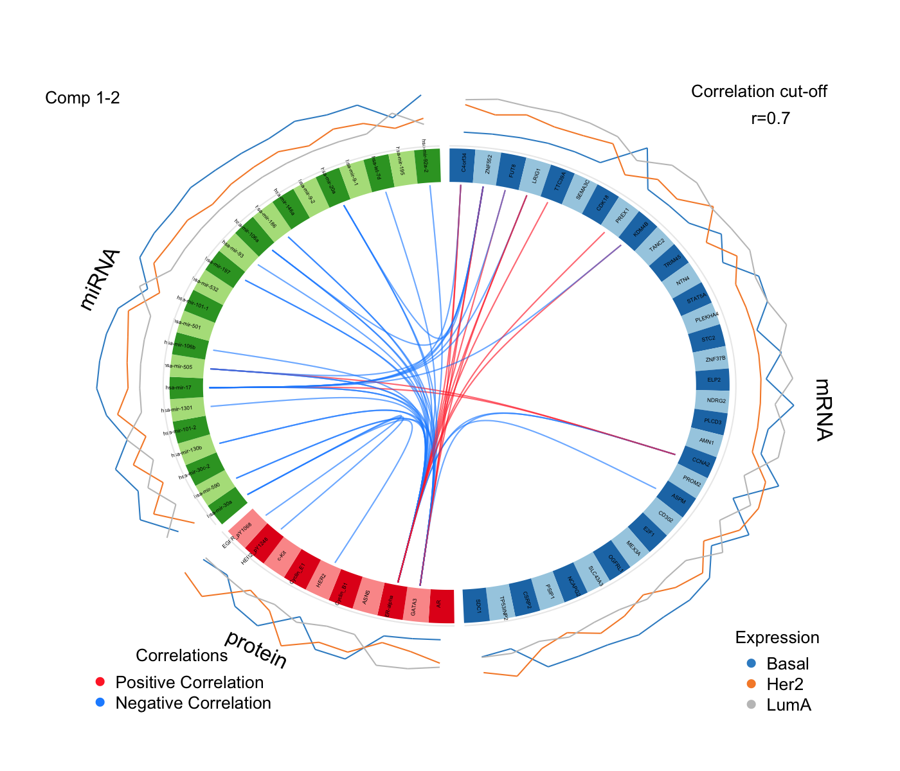
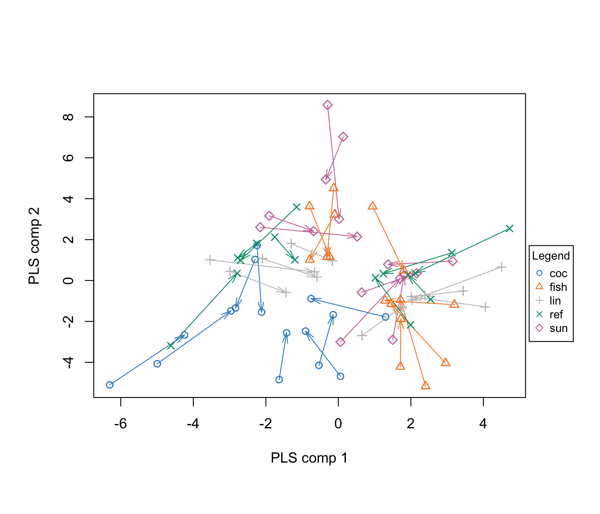
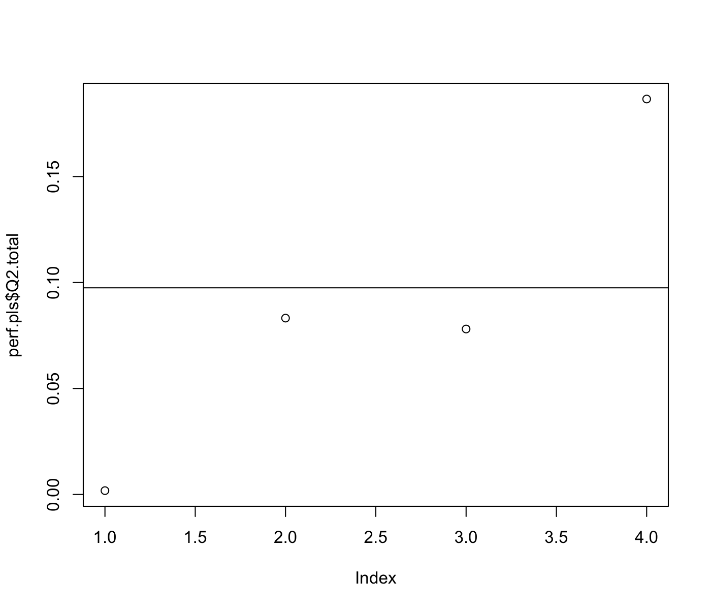
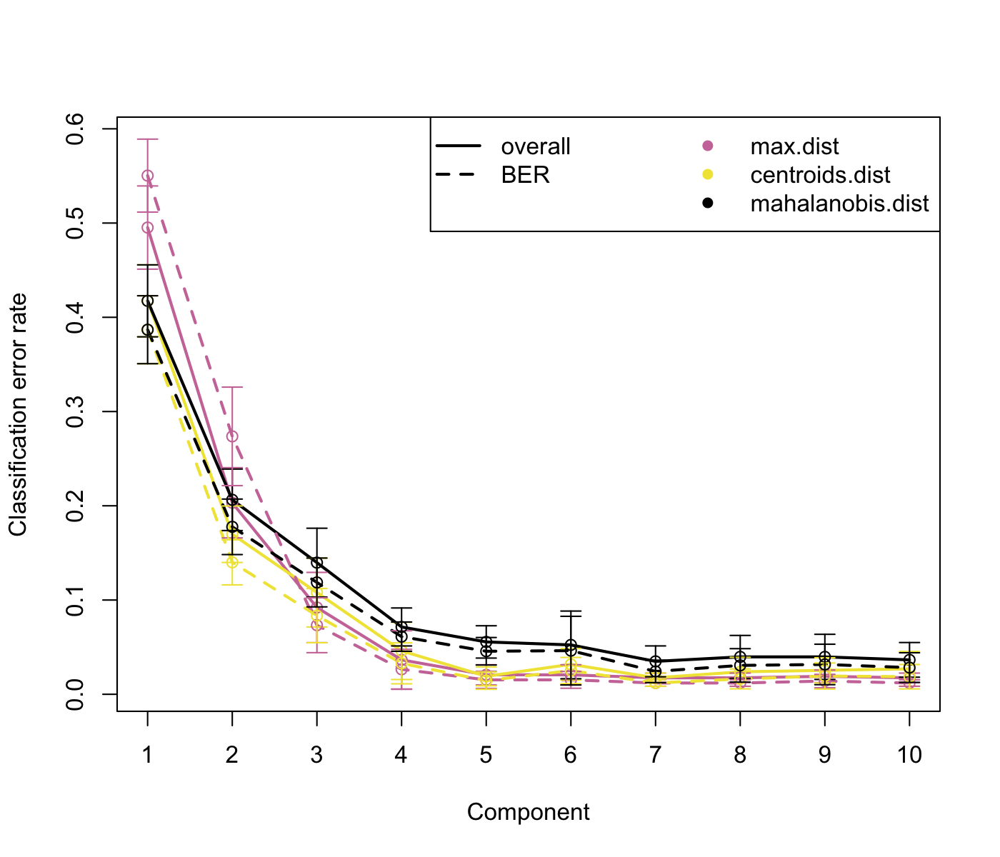
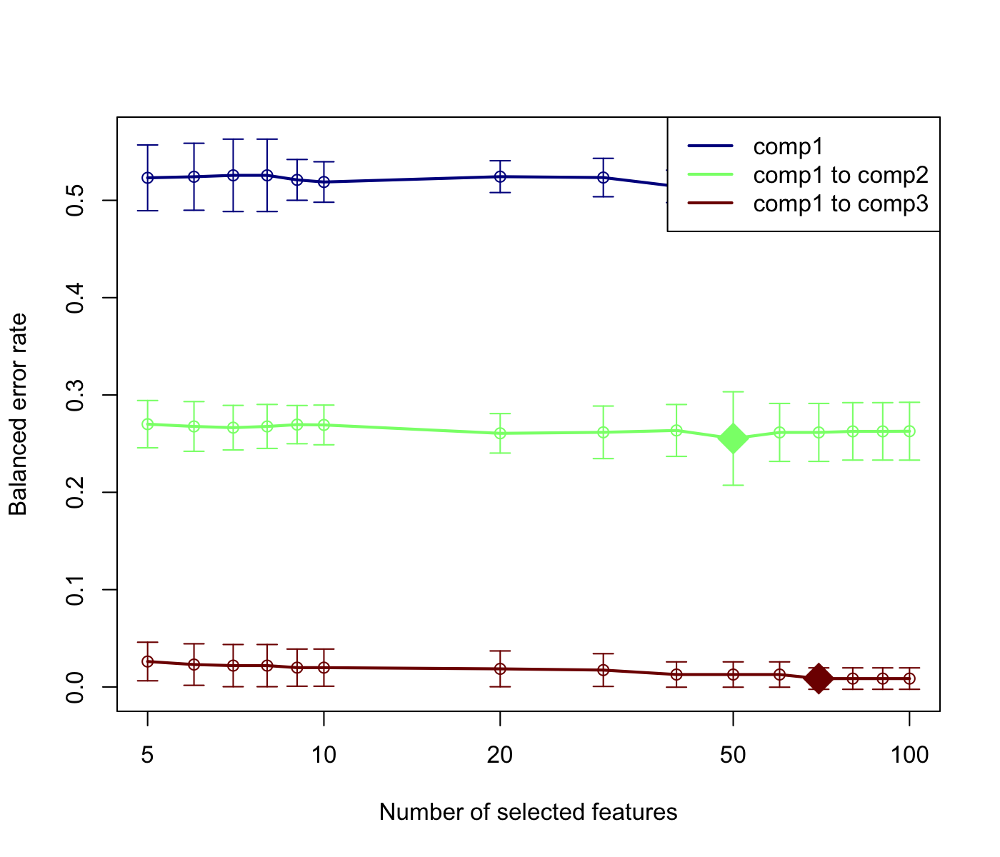

Chapter 4 PLS - Discriminant Analysis (PLS-DA)

4.1 Biological question
I am analysing a single data set (e.g. transcriptomics data) and I would like to classify my samples into known groups and predict the class of new samples. In addition, I am interested in identifying the key variables that drive such discrimination.
4.2 The srbct study
The data are directly available in a processed and normalised format from the package. The Small Round Blue Cell Tumours (SRBCT) dataset from (Khan et al. 2001) includes the expression levels of 2,308 genes measured on 63 samples. The samples are classified into four classes as follows: 8 Burkitt Lymphoma (BL), 23 Ewing Sarcoma (EWS), 12 neuroblastoma (NB), and 20 rhabdomyosarcoma (RMS).
The srbct dataset contains the following:
$gene: a data frame with 63 rows and 2308 columns. The expression levels of 2,308 genes in 63 subjects.
$class: a class vector containing the class tumour of each individual (4 classes in total).
$gene.name: a data frame with 2,308 rows and 2 columns containing further information on the genes.
More details can be found in ?srbct.
To illustrate PLS-DA, we will analyse the gene expression levels of srbct$gene to discriminate the 4 groups of tumours.
4.3 Principle of sparse PLS-DA
Although Partial Least Squares was not originally designed for classification and discrimination problems, it has often been used for that purpose (Nguyen and Rocke 2002; Tan et al. 2004). The response matrix Y is qualitative and is internally recoded as a dummy block matrix that records the membership of each observation, i.e. each of the response categories are coded via an indicator variable (see (Florian Rohart et al. 2017) Suppl. Information S1 for an illustration). The PLS regression (now PLS-DA) is then run as if Y was a continuous matrix. This PLS classification trick works well in practice, as demonstrated in many references (Barker and Rayens 2003; Nguyen and Rocke 2002; Boulesteix and Strimmer 2007; Chung and Keles 2010).
Sparse PLS-DA (Lê Cao, Boitard, and Besse 2011) performs variable selection and classification in a one step procedure. sPLS-DA is a special case of sparse PLS described later in 5, where \(\ell_1\) penalization is applied on the loading vectors associated to the X data set.
4.4 Inputs and outputs
We use the following data input matrices: X is a \(n \times p\) data matrix, Y is a factor vector of length \(n\) that indicates the class of each sample, and \(Y^*\) is the associated dummy matrix (\(n \times K\)) with \(n\) the number of samples (individuals), \(p\) the number of variables and \(K\) the number of classes. PLS-DA main outputs are:
A set of components, also called latent variables. There are as many components as the chosen dimension of the PLS-DA model.
A set of loading vectors, which are coefficients assigned to each variable to define each component. Those coefficients indicate the importance of each variable in PLS-DA. Importantly, each loading vector is associated to a particular component. Loading vectors are obtained so that the covariance between a linear combination of the variables from X (the X-component) and the factor of interest Y (the \(Y^*\)-component) is maximised.
A list of selected variables from
Xand associated to each component if sPLS-DA is applied.
4.5 Set up the data
We first load the data from the package. See 2.2 to upload your own data.
We will mainly focus on sparse PLS-DA that is more suited for large biological data sets where the aim is to identify molecular signatures, as well as classifying samples. We first set up the data as X expression matrix and Y as a factor indicating the class membership of each sample. We also check that the dimensions are correct and match:
library(mixOmics)
data(srbct)
X <- srbct$gene
Y <- srbct$class
summary(Y)## EWS BL NB RMS
## 23 8 12 20dim(X); length(Y)## [1] 63 2308## [1] 634.6 Quick start
For a quick start we arbitrarily set the number of variables to select to 50 on each of the 3 components of PLS-DA (see section 4.7.5 for tuning these values).
As PLS-DA is a supervised method, the sample plot automatically displays the group membership of each sample. We can observe a clear discrimination between the BL samples and the others on the first component (x-axis), and EWS vs the others on the second component (y-axis). Remember that this discrimination spanned by the first two PLS-DA components is obtained based on a subset of 100 variables (50 selected on each component).
From the plotIndiv the axis labels indicate the amount of variation explained per component. Note that the interpretation of this amount is not the same as in PCA. In PLS-DA, the aim is to maximise the covariance between X and Y, not only the variance of X as it is the case in PCA!
If you were to run splsda with this minimal code, you would be using the following default values:
ncomp = 2: the first two PLS components are calculated and are used for graphical outputs;scale = TRUE: data are scaled (variance = 1, strongly advised here);mode = "regression": by default a PLS regression mode should be used.
PLS-DA without variable selection can be performed as:
MyResult.plsda <- plsda(X,Y) # 1 Run the method
plotIndiv(MyResult.plsda) # 2 Plot the samplesplotVar(MyResult.plsda) # 3 Plot the variables4.7 To go further
4.7.1 Customize sample plots
The sample plots can be improved in various ways. First, if the names of the samples are not meaningful at this stage, they can be replaced by symbols (ind.names=TRUE). Confidence ellipses can be plotted for each sample (ellipse = TRUE, confidence level set to 95% by default, see the argument ellipse.level), Additionally, a star plot displays arrows from each group centroid towards each individual sample (star = TRUE). A 3D plot is also available, see plotIndiv for more details.
plotIndiv(MyResult.splsda, ind.names = FALSE, legend=TRUE,
ellipse = TRUE, star = TRUE, title = 'sPLS-DA on SRBCT',
X.label = 'PLS-DA 1', Y.label = 'PLS-DA 2')
4.7.2 Customize variable plots
The name of the variables can be set to FALSE (var.names=FALSE):
plotVar(MyResult.splsda, var.names=FALSE)
In addition, if we had used the non sparse version of PLS-DA, a cut-off can be set to display only the variables that mostly contribute to the definition of each component. Those variables should be located towards the circle of radius 1, far from the centre.
plotVar(MyResult.plsda, cutoff=0.7)
In this particular case, no variable selection was performed. Only the display was altered to show a subset of variables.
4.7.3 Other useful plots
4.7.3.1 Background prediction
A ‘prediction’ background can be added to the sample plot by calculating a background surface first, before overlaying the sample plot. See ?background.predict for more details. More details about prediction, prediction distances can be found in (Florian Rohart et al. 2017) in the Suppl. Information.
background <- background.predict(MyResult.splsda, comp.predicted=2,
dist = "max.dist")
plotIndiv(MyResult.splsda, comp = 1:2, group = srbct$class,
ind.names = FALSE, title = "Maximum distance",
legend = TRUE, background = background)
4.7.3.2 ROC
As PLS-DA acts as a classifier, we can plot a ROC Curve to complement the sPLS-DA classification performance results detailed in 4.7.5. The AUC is calculated from training cross-validation sets and averaged. Note however that ROC and AUC criteria may not be particularly insightful, or may not be in full agreement with the PLSDA performance, as the prediction threshold in PLS-DA is based on specified distance as described in (Florian Rohart et al. 2017).

4.7.4 Variable selection outputs
First, note that the number of variables to select on each component does not need to be identical on each component, for example:
MyResult.splsda2 <- splsda(X,Y, ncomp=3, keepX=c(15,10,5))Selected variables are listed in the selectVar function:
selectVar(MyResult.splsda2, comp=1)$value## value.var
## g123 0.53516982
## g846 0.41271455
## g335 0.30309695
## g1606 0.30194141
## g836 0.29365241
## g783 0.26329876
## g758 0.25826903
## g1386 0.23702577
## g1158 0.15283961
## g585 0.13838913
## g589 0.12738682
## g1387 0.12202390
## g1884 0.08458869
## g1295 0.03150351
## g1036 0.00224886and can be visualised in plotLoadings with the arguments contrib = 'max' that is going to assign to each variable bar the sample group colour for which the mean (method = 'mean') is maximum. See example(plotLoadings) for other options (e.g. min, median)
plotLoadings(MyResult.splsda2, contrib = 'max', method = 'mean')
Interestingly from this plot, we can see that all selected variables on component 1 are highly expressed in the BL (orange) class. Setting contrib = 'min' would highlight that those variables are lowly expressed in the NB grey class, which makes sense when we look at the sample plot.
Since 4 classes are being discriminated here, samples plots in 3d may help interpretation:
plotIndiv(MyResult.splsda2, style="3d")4.7.5 Tuning parameters and numerical outputs
For this set of methods, three parameters need to be chosen:
1 - The number of components to retain ncomp. The rule of thumb is usually \(K - 1\) where \(K\) is the number of classes, but it is worth testing a few extra components.
2 - The number of variables keepX to select on each component for sparse PLS-DA,
3 - The prediction distance to evaluate the classification and prediction performance of PLS-DA.
For item 1, the perf evaluates the performance of PLS-DA for a large number of components, using repeated k-fold cross-validation. For example here we use 3-fold CV repeated 10 times (note that we advise to use at least 50 repeats, and choose the number of folds that are appropriate for the sample size of the data set):
MyResult.plsda2 <- plsda(X,Y, ncomp=10)
set.seed(30) # for reproducbility in this vignette, otherwise increase nrepeat
MyPerf.plsda <- perf(MyResult.plsda2, validation = "Mfold", folds = 3,
progressBar = FALSE, nrepeat = 10) # we suggest nrepeat = 50
plot(MyPerf.plsda, col = color.mixo(5:7), sd = TRUE, legend.position = "horizontal")
The plot outputs the classification error rate, or Balanced classification error rate when the number of samples per group is unbalanced, the standard deviation according to three prediction distances. Here we can see that for the BER and the maximum distance, the best performance (i.e. low error rate) seems to be achieved for ncomp = 3.
In addition for item 3 for PLS-DA, the numerical outputs listed here can be reported as performance measures:
MyPerf.plsda##
## Call:
## perf.plsda(object = MyResult.plsda2, validation = "Mfold", folds = 3, nrepeat = 10, progressBar = FALSE)
##
## Main numerical outputs:
## --------------------
## Error rate (overall or BER) for each component and for each distance: see object$error.rate
## Error rate per class, for each component and for each distance: see object$error.rate.class
## Prediction values for each component: see object$predict
## Classification of each sample, for each component and for each distance: see object$class
## AUC values: see object$auc if auc = TRUE
##
## Visualisation Functions:
## --------------------
## plotRegarding item 2, we now use tune.splsda to assess the optimal number of variables to select on each component. We first set up a grid of keepX values that will be assessed on each component, one component at a time. Similar to above we run 3-fold CV repeated 10 times with a maximum distance prediction defined as above.
list.keepX <- c(5:10, seq(20, 100, 10))
list.keepX # to output the grid of values tested## [1] 5 6 7 8 9 10 20 30 40 50 60 70 80 90 100set.seed(30) # for reproducbility in this vignette, otherwise increase nrepeat
tune.splsda.srbct <- tune.splsda(X, Y, ncomp = 3, # we suggest to push ncomp a bit more, e.g. 4
validation = 'Mfold',
folds = 3, dist = 'max.dist', progressBar = FALSE,
measure = "BER", test.keepX = list.keepX,
nrepeat = 10) # we suggest nrepeat = 50We can then extract the classification error rate averaged across all folds and repeats for each tested keepX value, the optimal number of components (see ?tune.splsda for more details), the optimal number of variables to select per component which is summarised in a plot where the diamond indicated the optimal keepX value:
error <- tune.splsda.srbct$error.rate
ncomp <- tune.splsda.srbct$choice.ncomp$ncomp # optimal number of components based on t-tests on the error rate
ncomp## [1] 3select.keepX <- tune.splsda.srbct$choice.keepX[1:ncomp] # optimal number of variables to select
select.keepX## comp1 comp2 comp3
## 50 50 70plot(tune.splsda.srbct, col = color.jet(ncomp))
Based on those tuning results, we can run our final and tuned sPLS-DA model:
MyResult.splsda.final <- splsda(X, Y, ncomp = ncomp, keepX = select.keepX)
plotIndiv(MyResult.splsda.final, ind.names = FALSE, legend=TRUE,
ellipse = TRUE, title="SPLS-DA, Final result")Additionally we can run perf for the final performance of the sPLS-DA model. Also note that perf will output features that lists the frequency of selection of the variables across the different folds and different repeats. This is a useful output to assess the confidence of your final variable selection, see a more detailed example here.
4.8 Additional resources
Additional examples are provided in example(splsda) and in our case studies on our website in the Methods and Case studies sections, and in particular here. Also have a look at (Lê Cao, Boitard, and Besse 2011)
4.9 FAQ
- Can I discriminate more than two groups of samples (multiclass classification)?
- Yes, this is one of the advantage of PLS-DA, see this example above
- Can I have a hierarchy between two factors (e.g. diet nested into genotype)?
- Unfortunately no, sparse PLS-DA only allows to discriminate all groups at once (i.e. 4 x 2 groups when there are 4 diets and 2 genotypes)
- Can I have missing values in my data?
- Yes in the X data set, but you won’t be able to do any prediction (i.e.
tune, perf, predict) - No in the Y factor
- Yes in the X data set, but you won’t be able to do any prediction (i.e.
References
Khan, Javed, Jun S Wei, Markus Ringner, Lao H Saal, Marc Ladanyi, Frank Westermann, Frank Berthold, et al. 2001. “Classification and Diagnostic Prediction of Cancers Using Gene Expression Profiling and Artificial Neural Networks.” Nature Medicine 7 (6). Nature Publishing Group: 673–79.
Nguyen, D.V., and D.M. Rocke. 2002. “Tumor classification by partial least squares using microarray gene expression data.” Bioinformatics 18 (1). Oxford Univ Press: 39.
Tan, Y., L. Shi, W. Tong, GT Gene Hwang, and C. Wang. 2004. “Multi-class tumor classification by discriminant partial least squares using microarray gene expression data and assessment of classification models.” Computational Biology and Chemistry 28 (3). Elsevier: 235–43.
Rohart, Florian, Benoit Gautier, Amrit Singh, and Kim-Anh Le Cao. 2017. “MixOmics: An R Package for ‘Omics Feature Selection and Multiple Data Integration.” PLoS Computational Biology 13 (11). Cold Spring Harbor Labs Journals.
Barker, Matthew, and William Rayens. 2003. “Partial Least Squares for Discrimination.” Journal of Chemometrics 17 (3). Wiley Online Library: 166–73.
Boulesteix, A.L., and K. Strimmer. 2007. “Partial least squares: a versatile tool for the analysis of high-dimensional genomic data.” Briefings in Bioinformatics 8 (1). Oxford Univ Press: 32.
Chung, D., and S. Keles. 2010. “Sparse Partial Least Squares Classification for High Dimensional Data.” Statistical Applications in Genetics and Molecular Biology 9 (1). bepress: 17.
Lê Cao, Kim-Anh, Simon Boitard, and Philippe Besse. 2011. “Sparse PLS Discriminant Analysis: Biologically Relevant Feature Selection and Graphical Displays for Multiclass Problems.” BMC Bioinformatics 12 (1). BioMed Central Ltd: 253.